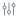

<section class="grap_select_main_content">
  <section class="grap_select_main_content_options">
    <div style="width: 40%;height: 100%;">
      <h1 style="color: #000;font-size: 0.75rem;font-style: normal;font-weight: 400;">Dato visualizado :</h1>
      <nz-select nzAllowClear nzShowSearch nzPlaceHolder="" nzMode="multiple" [nzCustomTemplate]="multipleTemplate"
        style="width: 100%; height: 1.875rem !important;" [(ngModel)]="selectedTelemetry"
        (ngModelChange)="logSelection()">
        <nz-option *ngFor="let telemetry of telemetryOptions" [nzLabel]="telemetry" [nzValue]="telemetry"></nz-option>
      </nz-select>
      <ng-template #multipleTemplate let-selected>
        <div class="ant-select-selection-item-content">
          {{ selected.nzLabel }}
        </div>
      </ng-template>
    </div>
    <div (click)="drawer_status = true"
      style="width: 1.75rem;height: 1.75rem;border-radius: 0.25rem;border: 1px solid var(--gray-4, #CED4DA);padding: 0.313rem;box-sizing: border-box;background-color: var(--gray-0, #F8F9FA);display: flex;justify-content: center;align-items: center;cursor: pointer;">
      
    </div>
  </section>
  <section class="grap_select_main_content_graph">    
    <div #chart style="height: 100% !important;width: 100% !important;"></div>        
    <div #NoData style="height: 100% !important;width: 100% !important;display: none;align-items: center;justify-content: center;" >
      <h1 style="color: #000;font-size: 0.75rem;font-style: normal;font-weight: 400;">Select a telemetry</h1>
    </div>
  </section>
</section>
@if (drawer_status == true) {
<nz-drawer [nzClosable]="drawer_status" [nzVisible]="true" nzPlacement="right" nzTitle="Configuración del grafico" (nzOnClose)="close()" style="scrollbar-width: thin;">
  <ng-container *nzDrawerContent>
    <section style="width: 100%;height: 100%;display: flex; flex-direction: column;gap: 0.5rem;">
      <section style="width: 100%;height: auto;display: flex;flex-direction: column;justify-content: space-between;gap: 0.5rem;">
        <nz-flex nzVertical style="width: 100%;">
          <h5 nz-typography>Dato visualizado</h5>
          <nz-select nzAllowClear nzShowSearch nzPlaceHolder="" nzMode="multiple" [nzCustomTemplate]="multipleTemplate"
            style="width: 100%; height: 1.875rem !important;" [(ngModel)]="selectedTelemetry"
            (ngModelChange)="logSelection()">
            <nz-option *ngFor="let telemetry of telemetryOptions" [nzLabel]="telemetry"
              [nzValue]="telemetry"></nz-option>
          </nz-select>
          <ng-template #multipleTemplate let-selected>
            <div class="ant-select-selection-item-content">
              <!-- <nz-icon [nzType]="selected.nzValue" /> -->
              {{ selected.nzLabel }}
            </div>
          </ng-template>          
        </nz-flex>
        <nz-flex nzVertical style="width: 100%;">
          <h5 nz-typography>Rango de fechas</h5>
          <nz-range-picker [(ngModel)]="date_select_main" (ngModelChange)="onChange($event)"
            style="height: 2.5rem;width: 100%;"></nz-range-picker>
        </nz-flex>
        <nz-flex nzVertical style="width: 100%;">
          <button nz-button nzType="default" style="height: 2.5rem;"  [disabled]="" (click)="search()" >Buscar</button>
        </nz-flex>
      </section>
      <hr style="width: 100%;background-color: var(--Neutral-Outline-Variant, #CACACA);border: 1px solid transparent;">
      <section style="width: 100%;height: 6.25rem;">
        <nz-flex nzVertical style="width: 15rem;" nzGap="0.5rem">
          <label nz-checkbox [(ngModel)]="drawer_options.checked_safe_disc" (ngModelChange)="onCheckedChange($event,'safe_and_disconection')">Elementos en la gráfica</label>
          <label nz-checkbox [(ngModel)]="drawer_options.checked_safe_zone" (ngModelChange)="onCheckedChange($event,'safeZone')">Zona segura (inteligente)</label>
          <label nz-checkbox [(ngModel)]="drawer_options.checked_disconection" (ngModelChange)="onCheckedChange($event,'disconection')">Desconexiones</label>
        </nz-flex>
      </section>
      <hr style="width: 100%;background-color: var(--Neutral-Outline-Variant, #CACACA);border: 1px solid transparent;">
      <section style="width: 100%;height: 7.25rem">
        <nz-flex nzVertical style="width: 15rem;" nzGap="0.5rem">
          <label nz-checkbox [(ngModel)]="drawer_options.checked_events_zone">Zona de eventos</label>
          <label nz-checkbox [(ngModel)]="drawer_options.checked_Alerts" (ngModelChange)="onCheckedChange($event,'ALERT')" >Alertas</label>
          <label nz-checkbox [(ngModel)]="drawer_options.checked_Fails" (ngModelChange)="onCheckedChange($event,'FAIL')">Fallas</label>
          <label nz-checkbox [(ngModel)]="drawer_options.checked_Info" (ngModelChange)="onCheckedChange($event,'INFORMATIVES')">Informativos</label>
          <label nz-checkbox [(ngModel)]="drawer_options.checked_Desconections" (ngModelChange)="onCheckedChange($event,'DESCONECTIONS')">Desconexiones</label>
        </nz-flex>
      </section>
    </section>
  </ng-container>
</nz-drawer>
}